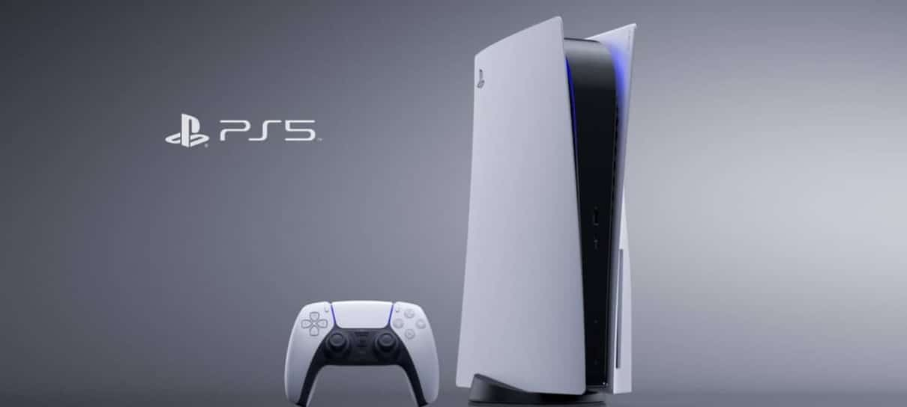

Novo Sony Playstation 5
O PS5 é o primeiro console de mesa da marca a ser apresentado com a posição vertical como a principal, e não na horizontal. Aparentemente, o design vertical auxilia na refrigeração do sistema.
É claro que o PlayStation 2, assim como o PlayStation 4, também funcionam na vertical (e, de certa forma, é até recomendado). No entanto, o PS5 já foi até mesmo apresentado desta forma.
